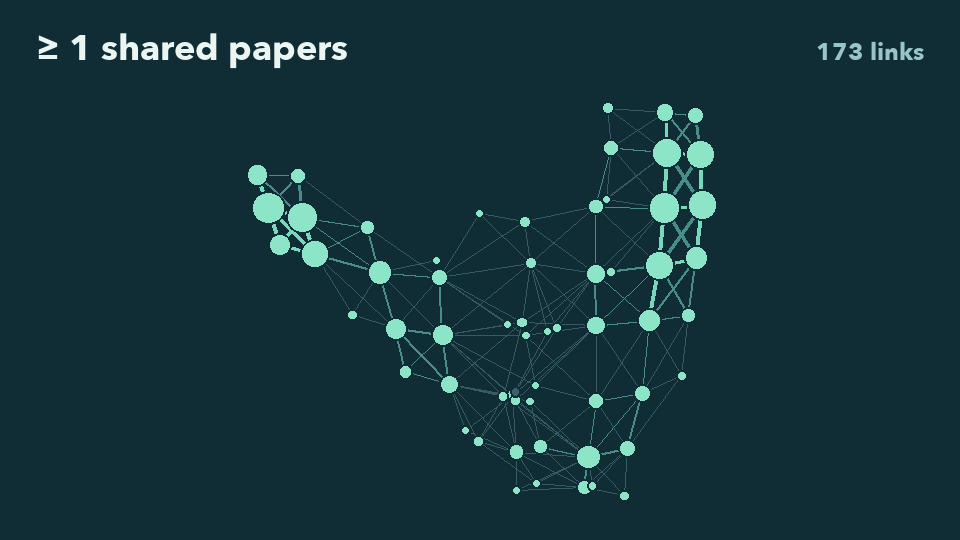

CBU AI & Machine Learning Lab
Mapping scientific literature
I built Mapper graphs from embeddings of 3,490 papers and used resampling to test which patterns held across analysis choices. I also used persistent homology to study how groups and loops change across distance scales.
View the full Mapper graph
